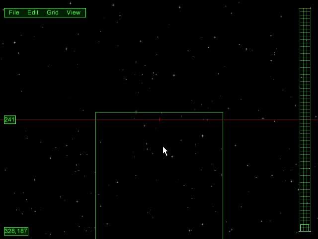

Ultra Assault Level Editor Reference
This document is designed as a reference guide while using the editor. If you are
new to the editor, it is suggested that you complete the tutorials before using this document.
Disclaimer of warranty
THIS SOFTWARE AND THE ACCOMPANYING FILES ARE SOLD 'AS IS' AND WITHOUT WARRANTIES
AS TO PERFORMANCE OR MERCHANTABILITY OR ANY OTHER WARRANTIES WHETHER EXPRESSED OR
IMPLIED. NO WARRANTY OF FITNESS FOR A PARTICULAR PURPOSE IS OFFERED.
The user must assume the entire risk of using the program. ANY LIABILITY OF THE
SELLER WILL BE LIMITED EXCLUSIVELY TO PRODUCT REPLACEMENT OR REFUND OF PURCHASE PRICE.
Support
Please note that support for the editor cannot be provided by SmallRockets. If
you have problems or questions regarding the editor, you can use the Ultra Assault
forum on www.smallrockets.com.
Keys
Tilda - (~) switches between the editor and the game
TAB - key toggles between Alien editor and Level editor
Shift - If held down while moving the mouse to the extents of the screen reveals hidden areas, which can be used to place aliens.
F1-F7 - Cheat options - press these to activate ship power-ups in the game, useful for testing.
F9 - Toggles track visibility while the game is running
F10 - Stops next level from loading when you hit end (top) of current level
F11 - Toggles player invincibility on/off
F12 - Stops screen from scrolling; toggles on/off
Level editor

The level editor is used to place Aliens, Tracks, background tiles and
objects, checkpoints and score sequences. It also has lighting controls for the level.
File Menu
All options can be accessed by selecting File from the menu bar.
New
Creates a blank level for you to edit.
NB: This will immediately erase all working data with no prompt - please ensure you have saved any work before selecting this.
Load
Load an existing level. When selected, the 'Load a level' dialog box appears. Select the level you want (if you don't see it scroll down using the bar on the right) then click OK. Click Cancel to change your mind.
NB: This will immediately erase all working data with no prompt - please ensure you have saved any work before selecting this.
Save
Save the current level. This overwrites any pre-existing level data. If the level has not been saved previously, this option behaves identically to 'Save as...' (see below).
Save as...
Saves the current level to a file you set. When selected the 'Save the level' dialog box will appear. Either select an existing file from the list, or enter a name in the empty box at the bottom and then select OK. You can choose not to save by selecting Cancel.
Edit Alien Types
Switches the editor into Alien Editor mode. Identical to hitting the TAB key.
Resume Playing
Switches into the game at the point you are at in the level. Identical to pressing the '`' key.
Import Lights
Export Lights
These options have no function.
Exit Game
Returns to the main Ultra Assault menu.
NB: This will immediately erase all working data with no prompt - please ensure you have saved any work before selecting this.
Edit Menu
All options can be accessed by selecting Edit from the menu bar.
Game Properties
These values are intrinsic to the correct operation of the game and should not be changed.
Level Properties
Brings up the Properties dialog box for the current level. The properties and values work as follows:
Backspeed - controls the scrolling speed of the background graphic tiles.
Start - the position in the level the game starts at. This should not be changed.
End - the position in the level the game ends at. This should not be changed.
Version - the game version. This should not be changed.
RenderShadows - Defines whether dynamic shadows should be displayed. 1 means display shadows, 0 means don't.
RenderLights - if set to 0, lights in the level will not have any effect, if set to 1 they will.
RenderRipple - set to 1 to turn on, 0 to turn off. This defines whether water ripples will be displayed or not.
RenderScaring - set to 1 to turn on, 0 to turn off. Determines whether bullets / explosions leave marks on the ground.
Set Checkpoint
A white line will appear across the centre of the screen, with a small circle in the centre. You can drag this circle up and down to set the position of the checkpoint. During the game, if the player crosses the line, a checkpoint will be triggered and if they die they will be returned to that position.
Set Light Level
A yellow line will appear across the centre of the screen, with a small circle in the centre, and a triangle and square on each side of it. A dialog will automatically open with four properties. The two properties that control the light are Ambient and Directional. Each has four values - these are Red (0-255), Green (0-255), Blue (0-255) and Intensity (0-255). The first three control colour, and the Intensity value controls the 'amount' of colour.
Ambient defines the overall lighting colour and intensity, while directional defines another light shining from the top left of the screen. Once set, the triangle and square on the light level line indicate the directional and ambient colour/intensity respectively.
Profile
Do not use this option. It may cause the editor to malfunction.
Level Shot
This option has no function.
Grid Menu
All options can be accessed by selecting Grid from the menu bar.
Grid On / Grid Off
Displays the editor grid. This forces editor objects to be 'locked' to grid points when they are moved around. To turn it off, go back to the Grid menu and select Grid Off.
Grid Spacing
Opens the Grid properties dialog box. X Spacing sets the horizontal spacing between each grid point, while Y Spacing sets the same for vertical spacing.
View Menu
All options can be accessed by selecting View from the menu bar.
Edit Layout
This option switches the editor into Layout mode. This is used to set background tile images, place objects or alter lighting settings for the level.
Edit Score Sequence
This option switches the editor into Score Sequence edit mode. Score Sequences determine the score multipliers players can gain throughout a level.
Edit Aliens
This option switches the editor into Alien edit mode, which is the default mode for the level editor, allowing you to place aliens, tracks etc.
Edit Sound
This option switches the editor into Sound edit mode. This mode allows you to place ambient sounds in the level
Hide Foreground
If the foreground is hidden the option will change to Show Foreground. This option turns off the top level of graphic tiles and is useful for placing tiles on the lower level (typically for water effects) and for placing aliens below a height of 0.
Hide Map
If the map is hidden this option will change to Show Map. Allows you to toggle the map on and off. Identical to pressing the 'M' key.
Show Groups
If groups are displayed, this option changes to Hide Groups. This controls display of grouped aliens. Any aliens which are in a group will have an indicator with the Group ID number next to them.
Highlight Whole Track
This option toggles whether a track is highlighted when you highlight any of its points. This is useful when you have a large number of tracks in an area of the level and its hard to distinguish them.
Hide Profile
This option has no function.
Inserting Aliens and Tracks
Inserting aliens
Right click where you want an alien, select Insert, then Alien. Right click to end track. Right click newly created circle and select Properties. Set Type to the name of the alien you want.
Inserting alien tracks
Insert alien as above, move the mouse and left click where you want track points. Right click when you are finished.
Creating a curved track
Select a point in an existing track. Hold down the Alt key, left click and drag to alter the shape of the track at that point.
Setting track point heights
All tracks are created at a height of 0. To alter this, Right click a track point, select Properties and change the third (Z) value. Heights should be no greater than 130.
These values are (X, Y, Z). X= horizontal, Y= vertical, Z = depth / height.
Setting complete track height
Set the height of a point on the track (as above), Right click the point, select Track, Standardise Z.
Setting alien start orientation
Aliens are spawned at the orientation set by the arrow in their circle. To change this, drag the circle at the end of the arrow to the correct angle. To set it manually, Right click the alien, select Properties and set the angle property to the correct value (0-360).
Alien type
Choose alien by typing in alien name into "type" field from property menu. (eg newboat1)
Alien spawn line
Set when the alien spawns by selecting it and dragging the circle below the alien up or down to set it's position. Aliens are spawned when the smaller circle crosses the centre of the screen.
Select all
To select an alien and the track it is attached to, Right click the alien circle and select 'Select All'. Dragging the circle now moves the track as well.
Duplicate all
To make a copy of an alien and the track it is attached to, Right click the alien circle and select Duplicate All. A complete copy will appear slightly offset from the original.
Delete all
Right click on alien circle, select "Delete all" and the alien and its associated track will be removed from the level.
Flip/Mirror/Smooth
Each option can be accessed by Right clicking a track point, select Track and then the option you want.
Flip - turns the track upside down (points at the bottom move to the top etc.)
Mirror - flips the track horizontally (points on the left move to the right etc.)
Smooth - makes the track more 'curvy', adding curve points as necessary
Activation delay
This sets the amount of time in seconds before an alien is spawned, after the spawn point has hit the centre of the screen.
Map shortcut bar
Click on an area in the bar to 'jump' to that part of the level. The map can be toggled on and off with the 'M' key.
Spawn limit
This number determines how many aliens will spawn at this point - 0 means no aliens, -1 means always spawn aliens. Any other positive number sets the maximum number that will be spawned.
Spawn interval
This number determines the time gap between each alien spawned, in seconds. For example, a gap of 0.5 means 'spawn an alien every half a second'. If the spawn limit is 1 or 0, this won't have any effect.
Spawn level
This number sets how 'powered-up' a player must be for the aliens to appear. It's designed to allow levels to become harder if a player is doing well. If the player has the same number or higher of power-ups the aliens will spawn.
Coin dropper
Coin dropper refers to aliens which release a power-up when they're destroyed. To set an alien to behave this way, right click it's circle and select Coin Dropper. If you set this on an alien which has a spawn limit greater than one (ie a wave of aliens), the player will have to shoot all the aliens to get the power up.
NB: There is a known bug with the coin dropper - if you create an alien, make it a coin dropper, and then set its spawn limit so it becomes a wave, all aliens will drop a coin.
To turn a coin dropper off, Right click the alien circle, select Properties. Set the Coin Dropper value to 0.
Drop level
This determines whether an alien should drop a power up, based on how 'powered-up' the player is. Right click the alien circle, select Properties and change the drop level value to the number of power ups the player is allowed to have. If the player has more than this number, the power up will not be released.
Join Track Points
Right click on track point, select Point, select Join and then click on point you want to join. The point you join with can even be on another alien track!
NB: Using this technique you can create looped tracks. There is no problem with looped tracks themselves, but using the 'Standardise Z' function on a looped track will cause the editor to crash.
Break Track Points
Right click on track point, select Point, select Break, and the selected Point will become detached from the next point in the track.
Trigger Transmit
Right click on track point, select Properties. The trigger transmit value allows you to tell aliens to morphs if an alien dies on this stretch of the track. The value can be 0-255. If the trigger is fired, any aliens on a point with a Trigger Receive set to the same value will morph.
Alien Stop
When an alien hits this point, it will stop. All points at the end of tracks are alien stops by default.
Alien Remover
This is used to remove aliens from the game altogether. This should be done when aliens reach the end of tracks. If you dont remove aliens the game may suffer performance problems. If you dont want the removal to be visible, make sure the alien remover is set on a point off-screen.
Alien Launcher
Right click a point, select Point, Alien Launcher. When an alien hits this point it will continue on the same trajectory.
Display Point Triggers
Left click point to select, select Point and select Triggers. This will display Trigger Transmit and Trigger Receive values for that point.
Trigger Receive
Right click a point, select Properties, then set the Trigger Receive value to activate. If a Trigger Transmit point activates with the same value, any alien at this point will morph.
This can be used to synchronise actions in the game, ie when the player kills a big alien, a range of new aliens are 'triggered'.
Track Speed
Right click a point, select Properties then set the Speed value to set the speed for this part of a track. Aliens can be created which follow the speed exactly, or which use this speed only as a guide. To set the speed for an entire track, Right click a point, select Track, then Select All. With the whole track selected, repeat the steps above, and this will set the whole track to that speed.
Marshal
Right click a point, select Properties then set this to 1 to make the point a marshall point. Marshall points are used to regroup aliens when some of them have been destroyed. Because of the way this is done it is best only to marshall aliens off-screen.
Control
Right click a point, select Properties and this value is accessible. This value should not be set manually - it refers to the curvature of the track around the given track point.
HoldFire
Right click a point, select Properties, then set HoldFire to 1 if you want the alien to cease firing on this section of the track (between the current point and the next one). Set it back to 0 to let the alien fire again.
NB: Some gun settings will override the holdfire settings.
Morph
Right click a point, select Properties then set morph to 1 (morph) or 0 (don't morph). If a point is set to morph, any alien that passes it will morph into its next state. Default is 0.
Morph once
Right click a point, select Properties then set MorphOnce to 1 (on) or 0 (off). You can use this to morph only the first of a wave of aliens. When the morphed alien dies, the next alien is morphed and so on. Default is 0.
AngleForce
Right click a point, select Properties then set AngleForce to 1 (on) or 0 (off). This allows an alien to be force to a particular orientation at the given point. The angle it is set to is defined in the Angle property (see below). Default is 0.
Angle
Right click a point, select Properties then set Angle to a value between 0 and 360. If AngleForce is set to 1 (see above), this forces any alien that passes the point to change orientation to this angle.
Extending an exisiting track
If you have a track which you wish to extend, Right click the last point, select Attach Track and place points as usual. Right click to finish.
Attach alien
Right click a point, select Attach alien. An alien will be created at this track point.
Group Aliens
Select an alien, hold down shift and select more aliens. Then Right click and select Group Aliens. Aliens which are grouped will release a power up when all are destroyed. To ungroup aliens, repeat the above step but select Ungroup Aliens at the final step.
Changing Background Tiles
All options relating to tiles are handled by the Edit Layout mode, available from the View menu.
Setting a tile
Right click a tile and select Properties. The Tile properties dialog will appear. The options available are as follows:
Raster - the name of the image to display. Once you have typed the correct name of an image it should immediately appear in the selected tile. For example 1-5x0
Flags - This value should not be altered manually
ColourTL, ColourTR, ColourBR, Colour BL - set the colours of the four corners of the tile. Each value is of the form Red (0-255), Green (0-255), Blue (0-255), Transparency (0-255). Generally these values should be set using the tile corners.
Modifying Tiles
Many tile properties can be accessed by Right clicking a tile and selecting an option from the Tile menu. These are listed below:
Properties - opens the Properties dialog discussed above.
Flip - flips the image vertically - the top becomes the bottom and vice versa.
Mirror - flips the image horizontally - the left becomes the right and vice versa.
Rotate 90, Rotate 180, Rotate 270 - Rotate the image 90, 180 and 270 degrees respectively.
Water - mark the tile as a 'water' tile. Water tiles during the game will not be scarred by explosions and will produce ripples.
Duplicate - this function is not used
Delete - Clears the tile completely
Insert >> - allows you to add aliens / tracks etc. as usual
To set the colours of the corners of the tile, highlight a corner of a tile (a circle appears), Right click and select either Colour Vertex or Colour Corner.
Colour Vertex - allows you to choose a colour which will apply across the tiles the corner circle touches.
Colour Corner - allows you to choose a colour which will apply across just the corner of the tile you are currently in.
Inserting Objects (clumps) and Decals
All level objects can be inserted by Right clicking the place you wish to place it, selecting Insert >> and selecting from the following options:
Arc - insert an arc light. Once placed, use the start and end circles to set the length of the Arc. Move it around the level by dragging its centre circle. To set properties manually, Right click any of its points and select Properties. Start and End values are of the form X, Y, Z respectively.
Clump - insert a 3D model. When selected the 'Insert an object' dialog appears. Select a model from the list or type its name in the box below the list and it will appear behind the dialog. Select OK to place it or use Cancel to return to the editor.
The object can be rotated using the arrow in its centre circle, or Right click it and select Rotate 90,180 or 270.
Objects can be quickly copied by Right clicking and selecting Duplicate. They can be deleted with the Delete option, or the Delete / DEL key.
Decal - insert an overlay texture. When selected the 'Insert an object' dialog appears. Select the decal you want in the way outlined for clumps above. They can also be moved, rotated, duplicated and deleted in the same way.
Texture - insert a tile texture. This allows you to select a tile texture which sets the image of the tile. This is another way to achieve the result outlined in the 'Setting a tile' section above.
Particulator - insert a particle emitter. Particle emitters are used to generate effects like smoke and fire. Use the left hand circle to move the particulator around the level, and the right circle to extend it's range.
Point light - inserts a light corona. You can move it by dragging its circle.
Strip light - inserts a light. To move it, click in the larger circle (but outside the smaller inner circles) and drag it to a new position. To resize it drag the small circles on the left, right, top and bottom sides of the light.
Inserting Sounds
All options relating to tiles are handled by the Edit Sound mode, available from the View menu.
Insert Ambient sound
Right click where you want the sound to be and select Insert Ambient. A vertical tube-like object will appear. The central circle is the sound's central point, the lower and upper circle are the locations where the sound fades out to zero. As the player flies towards the sound, its volume increases, and as they fly away it decreases again. Drag the upper or lower circle to set the distance the sound will be heard over. Drag the centre point to move it around the level.
Setting sound properties
All sound properties can be accessed by Right clicking on a sound and selecting Properties. The options are as follows:
Position - The place in the level the sound is located. It is easiest to move the sound in the editor, and not edit this value manually.
Radius - Don't edit this value manually
Wide - If the sound is stereo, or you do not want this sound to 'pan' (move left and right in stereo depending on the position of the player) set it to -1. Otherwise set it to 0.
Sound - The name of the sound you wish to play (case sensitive)
|